ホーム → 補論 → 文法 → 日本人のための日本語 → 日本人のため：８
第７章までで単文による文の構造が終わりました。単文というのは、基本的に述語が一つしかない文のことを言います。私たちのコミュニケーションは単文だけでもじゅうぶんに通じますが、より複雑な内容を伝えるためには、複数の文を組み合わせた高度な文を作る必要があります。この複数の文からなる文のことを複文と呼んでいます。複文のなかに組み込まれた文は、節と呼ばれます。節は最低限一つの成分と述語があれば成立し、複数の節からできた文を複文と呼んでいるんですね。
複文がどのようにできているかというと、メインとなる節、これまでに見てきた単文を考えていただければけっこうですが、これを主節と呼びます。この主節を構成する成分に付属して、その成分をさらに詳しく説明する節を、従属節と呼びます。この従属節は、主節の成分にどのように接続するかによって、大きく４つに分かれます。名詞に付属して、その名詞を詳しく説明するのが連体修飾節、節自体が名詞化し、さまざまな文の成分となるのが名詞節、副詞のような働きをするのが副詞節、「～と」に導かれる節が引用節です。説明だけでは、わかりにくいと思いますので、例文を以下に挙げますね。これらの例文の主節は、「太郎はうわさを聞いた」となります。従属節は、この主節の成分に付属したり、成分の一つになったりして、主節を補強します。
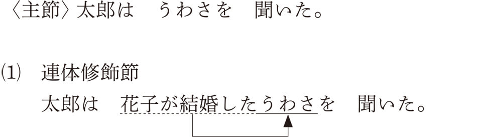
主節の「うわさ」の部分をより詳しく説明するために、「花子が結婚した」という具体的な内容を表す節が「うわさ」についています。“連体修飾”という名前ですが、国語学で名詞のことを体言と言ったことから、体言に連なって修飾するという意味で、連体修飾という名称になっています。もちろんどんな名詞も修飾することができますので、「アメリカから帰国した」という節を「太郎」につければ、「アメリカから帰国した太郎はうわさを聞いた」となるわけです。
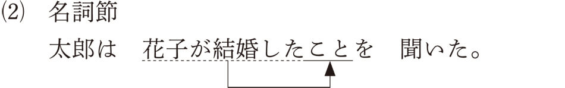
「こと」や「の」につくことで、節全体が名詞化されます。上の例であれば、「花子が結婚したの」でも言い換えられます。「太郎は花子が結婚したを聞いた」とは言えませんので、「こと」や「の」によって「花子が結婚した」という節を名詞化する必要があるわけです。主節の「うわさ」に代わって「花子が結婚したこと」が目的語として文の成分となっていますが、「花子が結婚したことがショックだった」のように主語になることもできます。このように、名詞化されることで、さまざまな文の成分となるわけです。
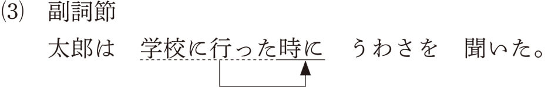
時や条件などの表現にかかることで、文のなかで副詞のような働きをすることから、副詞節と呼ばれます。文の成分という点では「太郎は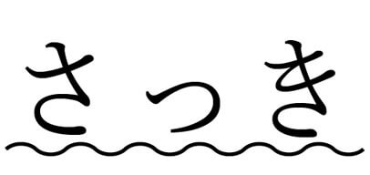うわさを聞いた」の「さっき」という副詞的な表現と同じ働きをしていることになります。
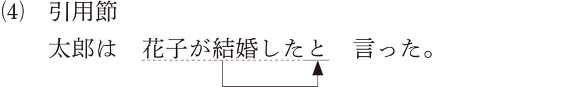
引用節は、直接「～と」や「～ように」に付属することで、そのまま文の構成要素になります。「～と思う」「～と言う」「～ように頼む」などのかたちで述語の内容を具体的に表します。
では、これらの４つの従属節について、次項でもう少し詳しく見ていきましょう。
連体修飾節は名詞にかかり、名詞の内容を詳しく説明します。日本語のようなSOV言語（主語‐目的語‐述語という順番を基本とする言語）では、名詞の前につくことから、左へ左へと展開していきます。たとえば、「太郎」という名詞を詳しく説明するとしたら、「マンションに住む太郎」などと名詞の前につけます。さらに、「マンション」を詳しく説明すると、「Mホームから購入したマンション」などと言えます。さらに、「Mホーム」も「テレビCMで有名なMホーム」などと説明することができるわけです。理論的には無限に左に展開することができますが、実際の会話ではこれくらいが限度でしょう。この展開をわかりやすく示すと以下のようになります。
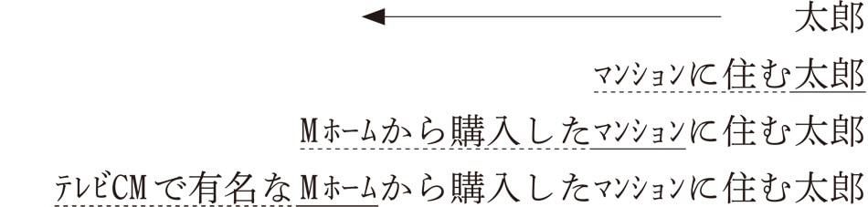
左にどんどん展開していくのがわかるでしょう。このように名詞の前について修飾するのが日本語の特徴です。反対に、英語を代表とするSVO言語（主語‐動詞‐目的語という順番を基本とする言語）では右へ右へと展開します。英語では関係代名詞によって名詞につなげます。
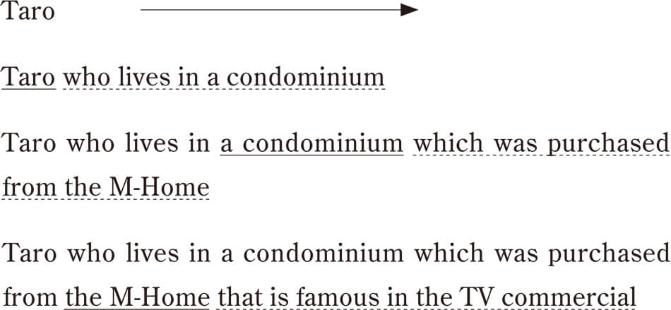
この特徴から、日本語では最後まで聞かないと何について説明しているのかわからないことになります。テレビＣＭで有名なＭホームから購入したマンションに住むのは誰なのかは、最後まで聞かないとわからないでしょう。それに対し、英語では、“Taro”が先に来ますので、「太郎」について説明していることははじめから明白なんですね。
この言葉の特徴は私たちの議論の仕方にも深く影響しているんです。欧米の人は、まずは結論から述べて、それについて説明するのに対し、日本人は説明からはじめて最後に結論を述べるようなやり方を好みます。つまり、ここでも、最後まで聞かないと何を言いたいのかがわからないという日本人の思考のあり方が反映されているんですね。日本語文の構造もSOVで述語が最後に来ますので、最後まで聞かないと具体的なことはわかりません。

「金曜日に飲み会がある……」まで聞いても、日本語ではさまざまな展開が考えられますから、最終的な情報はわかりませんね。これに対し、英語では、はじめに「知っている？」や「帰りが遅くなる」という結論の部分が来ますので、後はそれについての補足説明となるんです。
英文で書かれた論文を読むと、まず結論がどーんと前に来て、それについて説明していくという書き方が主流です。これに対して、日本語の論文は丁寧に説明をしながら、最後に結論を導くというやり方が多いように思います。ただ最近は、欧米型の、結論から先に述べ説明していくという論文も多くありますが、私自身は何の根拠もなく突然結論を先に示されると、戸惑いを感じてしまうほうです。日本語はまずは丹念に説明をし、読者の理解を深めてから結論を提示するというやり方に適した言語なのかもしれません。
日本語の文は「～こと」や「～の」をつけることで名詞化することができます。名詞化された節は名詞と同じように文の成分になることができます。
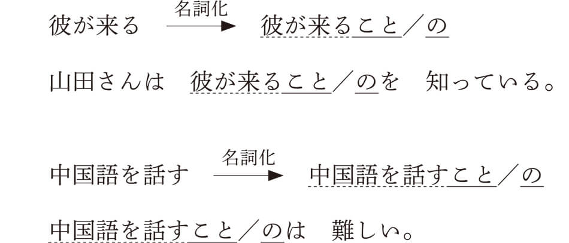
上の例で見るように、文を名詞節にするためには「～こと」や「～の」をつければいいわけですが、両方がいつでも使えるわけではないんですね。感覚を表す動詞（「見る」「見える」「聞く」「聞こえる」「感じる」など）では、「～こと」が使えないんです。
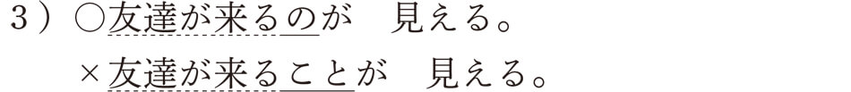
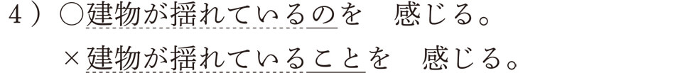
反対に、「～ことだ」「～ことがある」「～ことにする」「～ことになる」「～ことができる」などの慣用句では、「～の」が使えません。
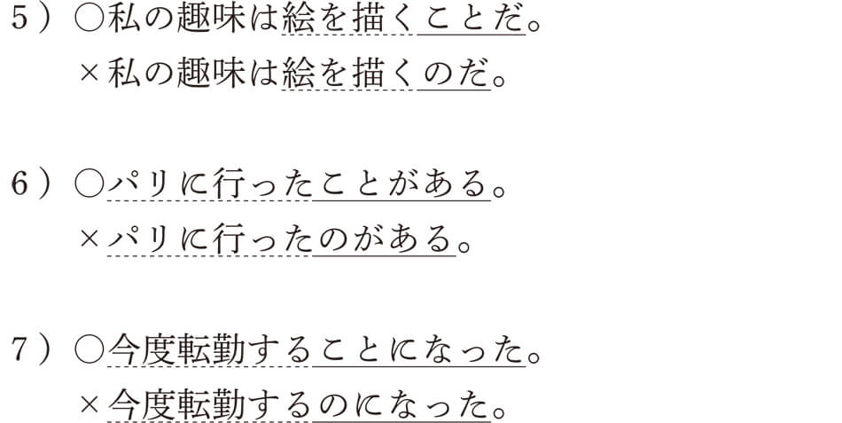
この「～こと」と「～の」は、英語の“that”と“to”に似ていますね。英語は構文の違いによるものですが、日本語の「～の」と「～こと」の使い分けには、上に挙げた以外にも複雑な要素があり、日本語学習者を悩ませる文法事項の一つとなっています。
複文を構成する副詞節は種類が多いんですよ。ちょっと挙げるだけでも、「～と」「～ば」「～たら」「～なら」などの順接条件節、「～が」「～けれども」「～のに」「～ても」などの逆接条件節、「～から」「～ので」「～ために」などの原因・理由節、「～ときに」「～あとに」「～まえに」などの時間節、「～ために」「～ように」などの目的節、「～ながら」「～みたいに」などの様態節があります。せっかくですから、それぞれの例文を一つずつ挙げてみましょう。
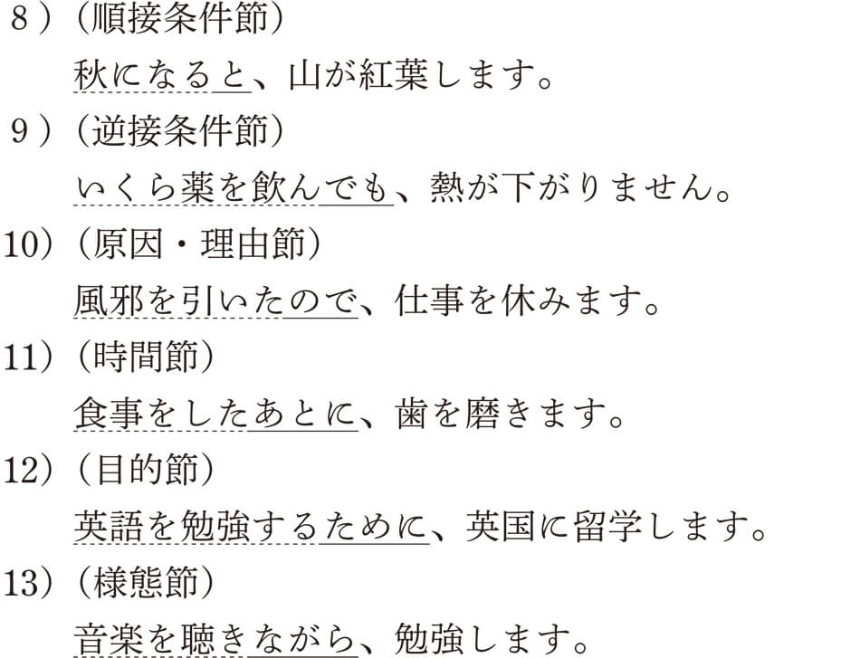
外国人にこのような副詞節を教えるときに日本語教師が一番困る形式は順接条件節なんです。どうしてかと言うと、「～と」「～ば」「～たら」「～なら」の使い分けを説明するのが難しいからなんですね。だって、みんな似ているでしょう。
これらの表現の特徴を簡単に説明すると、「～と」は「春になると、桜の花が咲く」のような反復的な因果関係の文、「～ば」は「雨が降れば、遠足は中止だ」のような一般的な仮定条件の文、「～たら」は「宝くじが当たったら、家を買いたい」のような個別の仮定条件の文、「～なら」は「君が行くなら、僕も行く」のようなある出来事に対する態度表明の文、となります。このなかでも、「～なら」をのぞいた、「～と」「～ば」「～たら」の用法がよく混同されるんですが、この３つの条件節には面白い特徴があるんです。先ほど挙げた典型的な表現が他の表現でも言えるかどうかを表したのが、以下の表になります。
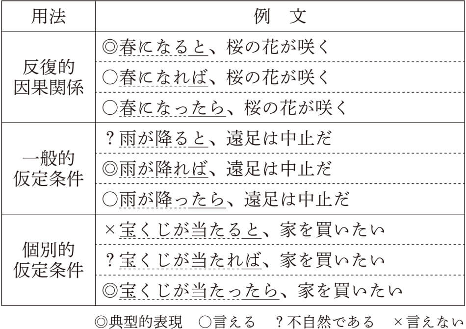
この表をよく見て、何か気がつくことがありませんか。そうですね、「～たら」はどの用法でも使えるということがわかりますね。「～ば」は個別的な仮定条件では不自然ですが、反復的因果関係なら使えそうです。一番使用領域が狭いのは「～と」ですね。反復的因果関係以外では使うことはできないようです。この関係は、「～と」＜「～ば」＜「～たら」のように表すことができます。
つまり、「～と」の用法は「～ば」でも言え、「～と」と「～ば」の用法は「～たら」でも言えるということなんですね。このことから、「～たら」はこの３つの条件節のなかでは一番使用領域が広い用法であることがわかります。
ただし、これらの表現が使える、使えないという感覚は個人や地域によって異なることが報告されています。もしかしたら、読者の方のなかには先ほどの表の判定に異論のある方もいらっしゃるかもしれません。そのような人のためにも、これらの表現に対する皆さんの語感を確認してみましょう。次の例文のなかで一番言いやすい表現はどれでしょうか。ひとつずつ選んでみてください。
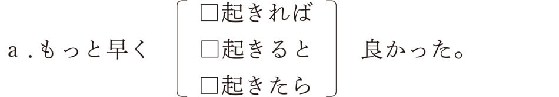
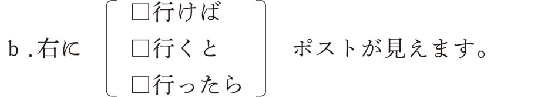
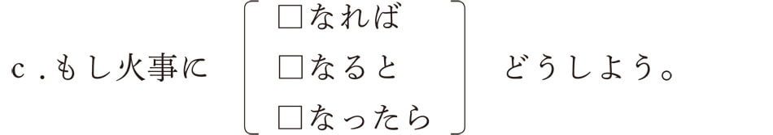
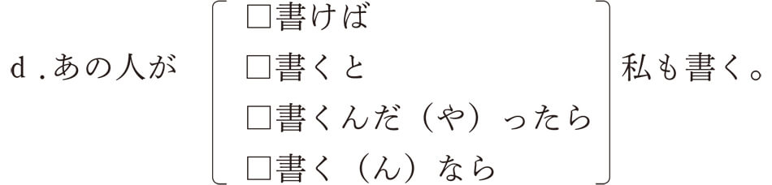
読者の皆さんはどれを選びましたか。じつはこれと同じ問題を東京と大阪の若い人を対象におこなった調査結果が出ています。以下の表をご覧になってください。
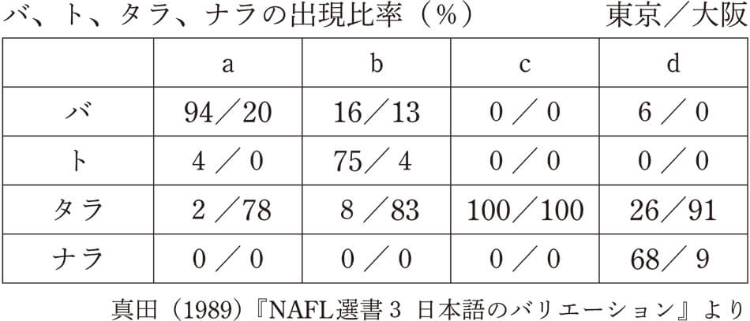
この表は大変興味深いことを示しています。東京と大阪ではこれらの表現の使い方が大きく異なっているんですね。たとえば、ａの設問では大多数の東京の人は「～ば」を選ぶのに対し、大阪の人は「～たら」を選んでいます。ｂの設問では、東京では「～と」、大阪では「～たら」、ｃの設問では、東京も大阪も全員が「～たら」、そして、ｄの設問では東京が「～なら」なのに大阪では「～たら」となっています。つまり、東京の人が「～ば・～と・～たら・～なら」を使い分けている状況で大阪の人はすべて「～たら」を使っているという事実があるんです。もし、東京と大阪出身の日本語教師がこれらの表現をどのように教えるか話し合ったとしたら、永遠に合意点を見出せない可能性があります。
このように、出身地による語感の違いが存在しているんですね。そう言われてみれば、私のような関東の人間が大阪出身の人と話をすると、大阪弁を抜きにしても、何か違和感を感じることがあるのはそのためなのかもしれません。この項の最初に「～たら」の使用領域の広さを確認しましたが、日本語を学ぶ外国人へのアドバイスがあるとしたら、「条件の表現で迷ったら、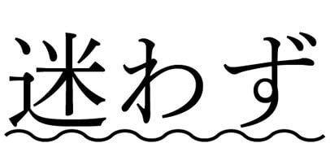『～たら』を使え」と言えそうですね。
「～と」や「～ように」によって導かれる節のことを引用節と呼びます。動詞の表す内容を具体的に示すもので、「思う」「言う」「命令する」「命じる」「依頼する」「頼む」などの動詞につくことが多いと言えます。

このなかで、「思う」という動詞はその他の動詞とは異なる特徴を持っています。たとえば、次の例文を見てください。
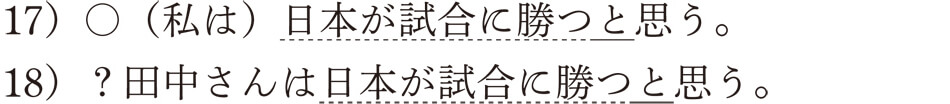話し手である私が「～と思う」と言うのは自然ですが、主語が「田中さん」になるとなんか変ですね。これはなぜかというと、「思う」という動詞は話し手の心の内容を表す動詞だからです。「ムード」の章で見た願望の「～たい」や感情形容詞と同じですね。17）の場合、「話者＝私」という関係ですので、話者は自分の心の内容を話していることになります。それに対して、18）の場合は、「話者≠田中さん」という関係ですね。田中さんの心の内容は話者にはわかりませんので、「思う」という動詞は使えないんですね。ではどうしたらいいかと言うと、「田中さんは日本が試合に勝つと思っている」と言えばＯＫでしょう。そうすると、今度はどうして「思っている」なら言えるのだろうかという疑問が湧いてきます。このことを説明するために、次の例文を見てください。
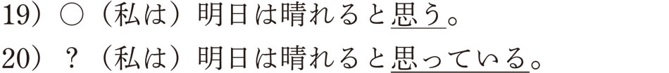この例文では「思っている」は変ですね。じつは、「思う」という動詞は現在における心の状態を表しているんです。「明日は晴れる」というのは現在の気持ちですので、「思う」になるわけです。反対に、以前からそのような気持ちでいる場合は、「思っている」というテイル形にならなければなりません。
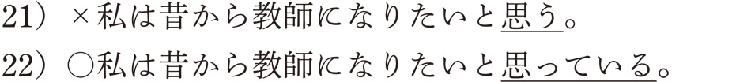アスペクトの章でテイル形をやりましたが、覚えているでしょうか。テイル形は動作の継続を表しましたね。つまり、「思う」は発話時の瞬間的な気持ちを表し、「思っている」はそのような気持ちがずっとつづいていることを表すわけです。それで、先ほどの例文18）について、「田中さんは日本が試合に勝つと思っている」が許容される理由は、田中さんの瞬間的な気持ちはすぐにはわかりませんが、そのような気持ちがつづいている場合は田中さんの様子や話から田中さんの気持ちを知ることができるために、「思っている」が使えるようになるんですね。この「思う」と「思っている」の違い、日本人はまったく意識しないで使っているんですが、日本語を学ぶ外国人にとっては厄介な表現なんです。
さらに、英語の“think”とくらべてみると「思う」という動詞のもう一つの特徴がわかります。次の例を見てください。日本語に対応する英語訳を下につけてあります。
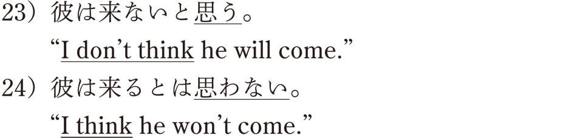日本語と英語はまったく反対ですね。日本語では23）の言い方のように引用節を否定するのが普通ですが、英語では反対に“I don't think”のように通常は主節を否定します。日本語で英語のように主節を否定すると、24）のように引用節の内容の強い否定になりますが、英語では引用節を否定することで強意の否定になります。対照的で面白いと思いませんか。
ついでに、否定の使い方ということで言うと、日本語の「はい／いいえ」と英語の“Yes／No”も必ずしも一致しませんね。たとえば、「彼は来ませんか？」と聞かれ、もし来ないのであれば、「はい、来ません」と日本語では言います。しかし、英語では、“No, he won't come”となります。もし来るのであれば、「いいえ、来ます」となり、英語では“Yes, he will come”となるわけです。これは、日本語の「はい／いいえ」は相手の言ったことに対して同意するかどうかが判断基準になっており、同意する場合は「はい」、同意しない場合は「いいえ」となるわけですね。これに対し、欧米語では肯定形であれば“Yes”、否定形であれば“No”となり、“Yes／No”がその後の述語の肯否と一致しなければならないんです。欧米語の絶対的な基準に対して、日本語の言い方は相対的な基準であると言えるわけです。
英語がまだ苦手な日本人が海外に赴任すると、この“Yes／No”の使い方で大混乱するという話をよく聞きます。たとえば、次に紹介するのはインターネットの書き込みサイトで見た例です。
米国人：今度我が家でパーティをするんですが、
来られませんかね？
日本人：ええ、ちょっと都合が悪いんです。
（米国人なら、「いいえ」で答える）
米国人：えっ、来られないんですか？
日本人：はい。（米国人なら、「いいえ」と答える）
米国人：えっ、ＯＫですか？
日本人：いいえ、都合が悪いです。
なんて感じですね。このような会話が延々とつづき、日本人もアメリカ人も最後は疲れ果ててしまうというわけです。相手の言っていることに同意するかしないかによって、「はい」と「いいえ」を使うのは、日本人だけでなく、韓国人や中国人も同じであると聞きますので、日本語独特の現象ということではないようです。
主節と従属節からなる複文は以上ですが、複文のなかには２つの節が対等な資格で並んでいるものがあります。これを、主従関係の複文に対して、並列関係の複文と呼び、そこで使われる節のことを並列節と言います。学校文法で重文と呼んでいるものですね。日本語文法では複文のなかに含まれます。並列節には、テ形、連用形、「～たり」「～し」などによるものがあります。これらの例文を以下に挙げますね。

いずれの例文でも、一方が主で他方が従であるという関係にはなく、２つの文が対等な資格で並んでいることになります。これらの並列節のなかでもよく使われるのがテ形文です。テ形は、述語に接続助詞である「～て」がついた形なんですが、「～て」によってつながれた２つの文の関係によって、さまざまな意味が生まれます。次の表は、そのようなテ形の用法をまとめたものです。表のなかで示されているように、テ形の用法のすべてが並列節になるのではなく、多くの場合は従属節として主節にかかっていく副詞節の役割を担っているんですね。
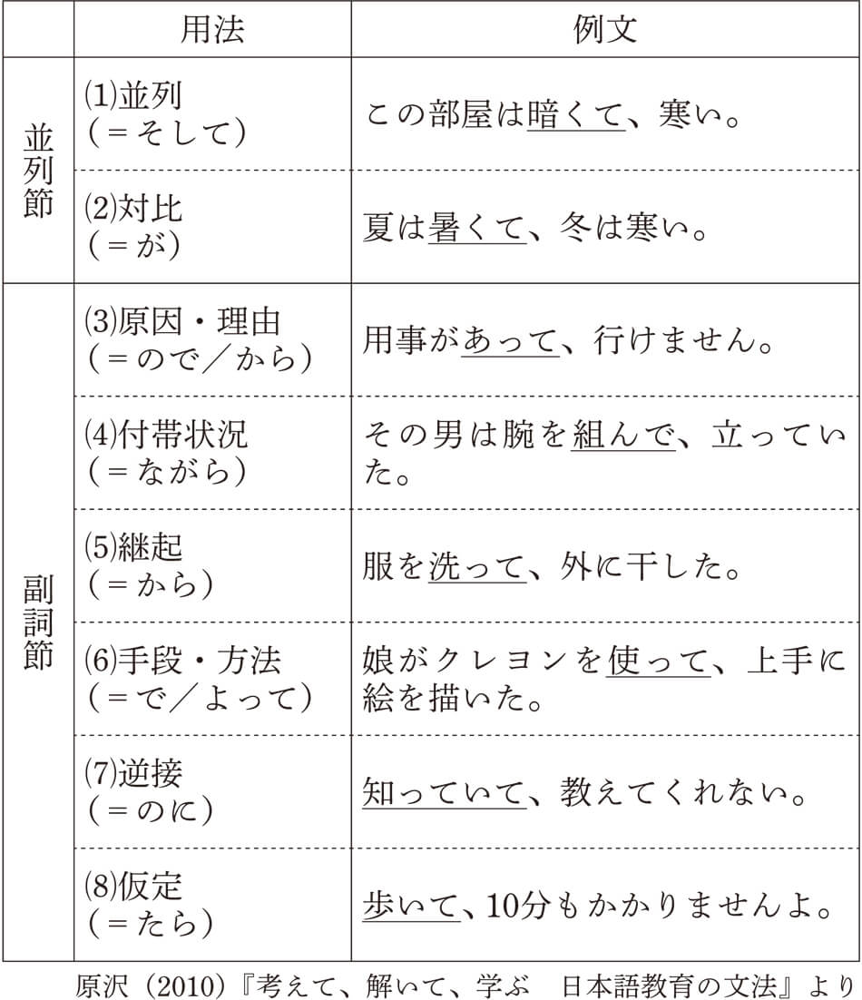このテ形にかんして、アスペクトの章で登場した金田一春彦さんは、面白いことを言っています。日本人は文と文との関係がはっきりすることを嫌い、接続詞の使用を避け、そのためにテ形を使うことがあるということなんです。たとえば、社員が遅刻した言い訳を述べるときに、
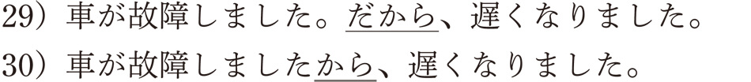と言うのは、いずれもキツすぎて、車が故障したというちゃんとした理由があるんだぞと威張っているように取れると言うんですね。それよりも、テ形を使って、
と言うほうがいいと述べています。たしかにテ形文では自分からはっきりと理由を言っているのではなく、文と文の自然なつながりのなかで理由の意味が出てくるわけですから、やわらかい言い回しになっています。もっとも、金田一さんは、一番いいのは、「車が故障しました。すみませんでした」と、接続詞も接続助詞も入れない謝り方だと言っています。
ところで、この「原因・理由」のテ形文は、日本語学習者がよく間違える用法でもあります。たとえば、
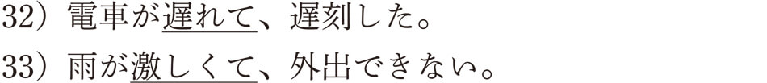は、いずれも、「電車が遅れたので」「雨が激しいから」などと言い換えることができ、主節の原因や理由を表すテ形文であることがわかります。このテ形文のつもりで、留学生は次のような文を作ることがあるんですね。
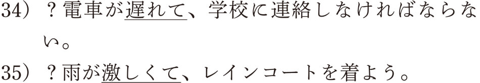さて、これをどうやって説明したらいいんでしょうか。いずれも、「～ので」や「～から」を使って言えるので、「原因・理由」の用法であることは明らかです。
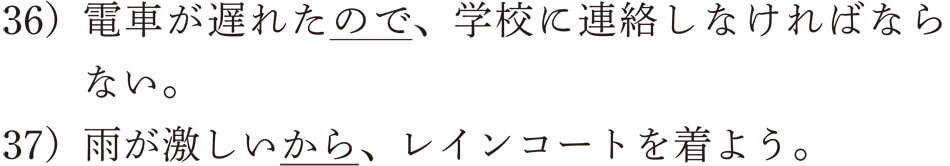じつは、この問題を解くカギは、主従関係にあるんです。なぜかというと、「原因・理由」のテ形文は従属節になることから、テンス・ムードといった文法機能は完全に主節におんぶしているんです。つまり、従属節のテンスやムードは主節に一致する必要があるんですね。たとえば、例文32）で説明すると、
と表すことができ、過去を示すタは、「電車が遅れて、遅刻し」全体にかかっているということになるわけです。つまり、「電車が遅れた ＋て＋ 遅刻した」と考えることができ、「電車が遅れて」という従属節は主節と同様に過去の解釈を受けることになるわけです。このように考えると、先ほどの文が不自然になった理由がはっきりします。
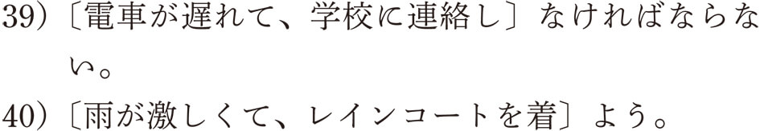つまり、例文39）であれば、義務のムード「～なければならない」が「電車に遅れて」にもかかってしまい、「電車が遅れなければならない」という変な意味になってしまうんですね。同様に、例文40）の従属節も、「雨が激しかろう」となり、文末のムードと一致することができないために、座りの悪い文となっているわけです。このことから、テ形文では、テでつながれた文全体で、ムードやテンスを考える必要があると言えます。
以上で、複文の説明は終わりになります。日本語文の基本構造からはじまり、主題化、自動詞と他動詞、ボイス、アスペクト、テンス、ムード、複文という順番で日本語文法の主要な概念を解説してきました。日本語文の構造をもう一度まとめると、次のようになります。
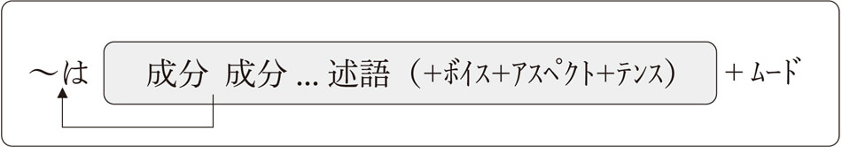皆さんが今まで知らなかった日本語文法の姿、今ではおわかりいただけるようになったでしょうか。文法は決して難しいものではなく、私たち日本人の心を具現化する手段なんですね。本書でも紹介しましたように、そこには自然で論理的な法則が潜んでいます。そんな日本語のパズルを解く面白さが文法研究にはあるんですね。読者の皆さんにもそんな文法の魅力の一端に触れていただけたとしたら、とても嬉しいです。
▲